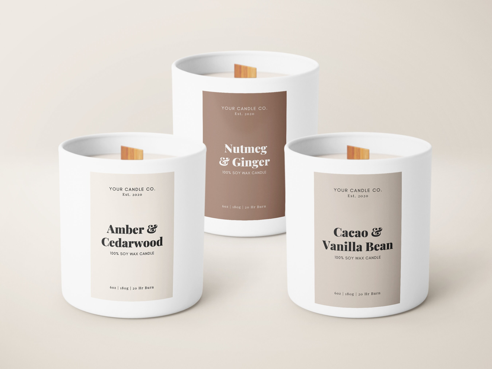
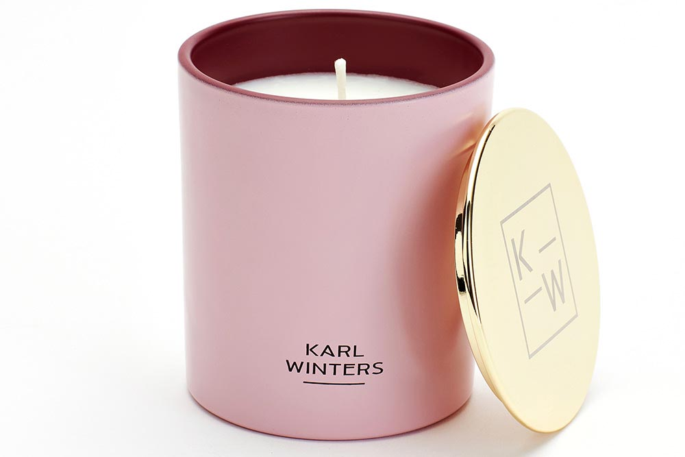
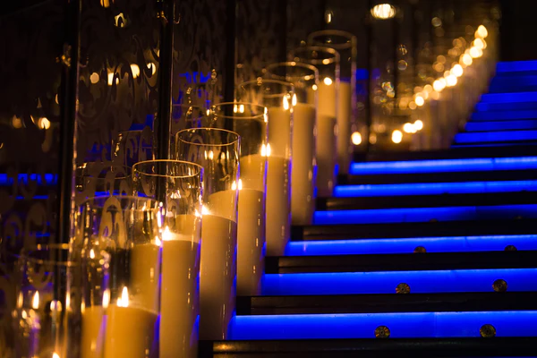
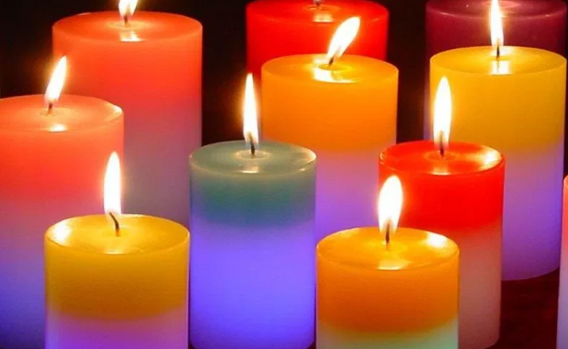

At Scenic Scents Our Services include:
-
Candle Making:

This is the primary service of any candle company - creating and selling candles. This can range from standard, scented, decorative and eco-friendly.
-
Custom Candle Design:
The company can create customized candles based on customers' specifications, such as shape, size, color, and scent. This can include personalized candles for weddings, birthdays, or corporate events.
-
Private Labeling:
For businesses looking to sell their own branded candles, we can produce private label candles. This includes creating the candles and packaging them with the client's branding.
-
Event Services:
The company could provide event services, setting up candles and decorations for occasions such as weddings, parties, or corporate events.
-
Consulting Services:
For those interested in starting their own candle making business, Scenic Scents might offer consulting services to provide expert advice on production methods, materials, and other aspects of the business.